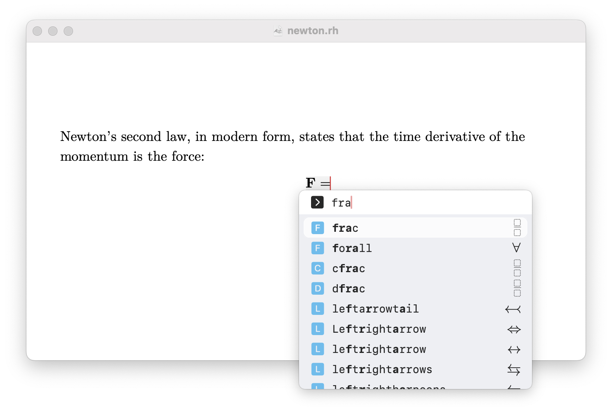

Press Esc, backslash (\) or Ctrl+Space to trigger a compositor window, and type commands to insert elements.

For details on available commands, refer to the Commands section.
The app automatically replaces shortcuts with their intended elements as you type. Here are some common replacements:
| Shortcut | Replacement | Look |
|---|---|---|
... |
… (ellipsis or \ldots) |
… |
-> |
\rightarrow (math mode) |
\(\rightarrow\) |
bbbR␣ |
\mathbb{R} (math mode) |
\(\mathbb{R}\) |
For details on all replacements, refer to the Replacement Rules section.
The app supports a subset of LaTeX commands, particularly those related to math mode. While similar, some discrepancies exist.
For details, refer to the Discrepancy section.
To export your document to LaTeX source code, use the Export menu item under the File menu. This will generate a .tex file that you can compile with XeLaTeX.